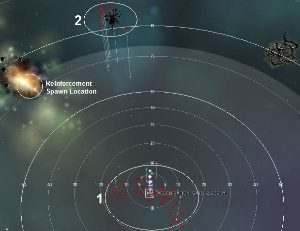
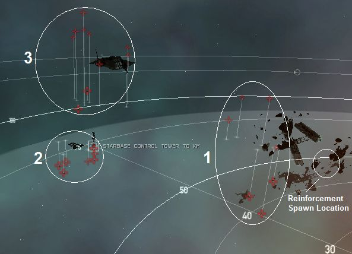

The Assault, Level 4
Last edited by GaladTirin
Thu, 03 Dec 2015 04:41 UTC
Thu, 03 Dec 2015 04:41 UTC
Faction: Guristas
Mission type: Encounter
Space type: Deadspace
Damage dealt: Kinetic 92% / Thermal 8% (heavy thermal from elite cruisers)
Web/scramble: Elite Frigates
Extras: ECM Jammer (Battleships - Pith Eliminator/Exterminator and Elite Cruisers - Dire Pithum Nullifier/Annihilator)
Recommended damage dealing: Kinetic / Thermal; Max orbit 50km
Recommended ship classes: Battleship, Command Ship, HAC.
Video: Golem, Sniping Imperial Apoc
Note: Spawn triggers are the highest bounty battleships in a particular group. Their names will randomly change, so be sure to identify them correctly via their bounties.
Pocket 1
Auto aggro from Group 1 at warp-in. No aggro from Group 2.
Group 2 will aggro on drones.
The Reinforcement group might aggro drones.
SHOOTING (including target painting) the highest bounty battleship in Group 1 will trigger the Reinforcement Group spawn.
Important Notes:
- There's fleet aggro in this pocket. First pilot to warp in will get the aggro from Group 1, but no aggro from Group 2 as per normal.
- Remaining fleet members who warped in later will receive aggro from Group 2 when they start to open fire on Group 1.

Group 1 (Auto-aggro): (15-31km)
2x Elite Frigates (Dire Pithi Wrecker/Plunderer)4x Battleships (Pith Dismantler/Obliterator/Destroyer/Eliminator) Jammer (Eliminator), Trigger on attack (highest bounty battleship)
Group 2: (75-85km)
4x Elite Cruisers (Dire Pithum Inferno/Mortifier) flameburst missile (Thermal)3x Battlecruisers (Pithatis Assassin/Assaulter)
Reinforcement Group (Auto-aggro): (117-120km)
3-4x Battlecruisers (Pithatis Assassin/Enforcer/Executor/Revolter)3-4x Battleships (Pith Conquistador/Eliminator/Exterminator/Destroyer) Jamming (Eliminator/Exterminator)
Structures:
Structures drop no loot.Ships detail:
| Orbit | Max. Velocity |
Shield (hp) |
Armor (hp) |
Shield Resistances (%) | Armor Resistances (%) | DPS (hp/s) | ||||||||||
| EM | EXP | KIN | THERM | EM | EXP | KIN | THERM | EM | EXP | KIN | THERM | |||||
| 2x Dire Pithi Wrecker | 7,500m | 360m/s | 725 | 450 | 85 | 79 | 64 | 72 | 85 | 79 | 64 | 72 | - | - | 18 | 5 |
| 4x Pith Dismantler | 50,000m | 280m/s | 5500 | 4250 | 72 | 62 | 42 | 52 | 72 | 62 | 42 | 52 | - | - | 89 | - |
| 4x Dire Pithum Inferno | 45,000m | 320m/s | 1800 | 1150 | 90 | 85 | 72 | 79 | 90 | 85 | 72 | 79 | - | - | 48 | - |
| 7x Pithatis Assassin | 35,000m | 320m/s | 1800 | 1150 | 60 | 50 | 30 | 40 | 60 | 50 | 30 | 40 | - | - | 55 | - |
| 4x Pith Eliminator | 28,750m | 280m/s | 6750 | 4250 | 74 | 64 | 44 | 54 | 74 | 64 | 44 | 54 | - | - | 80 | 16 |
| 21 total ships | Averages/Totals: | 70,250 | 47,550 | 72.7 | 63.3 | 44.1 | 53.8 | 72.7 | 63.2 | 44 | 53.7 | - | - | 1,288 | 73 | |
Tip
- The warp gate is unlocked. It is not necessary to kill any of the ships in Pocket 1.
Pocket 2
No aggro at warp-in.
No pocket aggro if Group 1 or Group 3 is attacked (in any order). Drones can be deployed safely to attack these groups.
Attacking Group 2 will aggro Group 3.
Reinforcement wave will aggro on drones
SHOOTING (including target painting) the highest bounty battleship in Group 2 will trigger the Reinforcement Group spawn.

Group 1: Ship Carcass (50-60km)
2x Elite Frigate (Dire Pithi Invader/Infiltrator) Web/Scramble2x Elite Cruisers (Dire Pithum Abolisher/Eraser)
3x Battleships (Pith Dismantler/Extinguisher)
Group 2: Starbase Control Tower (65-70km)
2x Elite Cruisers (Dire Pithum Annihilator/Killer/Murderer/Nullifier) Jamming5x Battleships (Pith Extinguisher/Destroyer/Eliminator/Conquistador) ECM Jammer (Eliminator) Trigger on attack (highest bounty battleship (or not)) As of 12/09/2014, attacking one of the lower bounty battleships can also trigger the reinforcement group.
Group 3: Caldari Station Ruins (110km - aggros when Group 2 is engaged)
2x Elite Frigates (Dire Pithi Infiltrator/Invader) Web/Scramble3x Destroyers (Pithior Guerilla/Renegade)
3x Battlecruisers (Pithatis Assaulter/Enforcer)
2x Battleships (Pith Exterminator/Extinguisher/Destroyer/Conquistador) Jamming (Exterminator)
Reinforcement Group (40km - auto-aggro):
4x Cruisers (Pithum Eraser/Inferno/Mortifier/Abolisher)4x Battleships (Pith Eliminator/Exterminator/Conquistador) Jamming (Eliminator/Exterminator)
Secondary Reinforcement Group (first noted in Jan. 2012)
(May or may not spawn, triggered by defeat of group 3) 2x Cruisers (Pithum Eraser/Inferno/Mortifier)Structures:
One Habitation Module drops 10 each of 2 low value trade goods.Ships detail:
| Orbit | Max. Velocity |
Shield (hp) |
Armor (hp) |
Shield Resistances (%) | Armor Resistances (%) | DPS (hp/s) | ||||||||||
| EM | EXP | KIN | THERM | EM | EXP | KIN | THERM | EM | EXP | KIN | THERM | |||||
| 1x Dire Pithi Invader | 2,500m | 720m/s | 725 | 450 | 55 | 44 | 19 | 32 | 55 | 44 | 19 | 32 | - | - | 19 | - |
| 2x Dire Pithum Abolisher | 33,000m | 320m/s | 1800 | 1150 | 90 | 85 | 72 | 79 | 90 | 85 | 72 | 79 | - | - | 34 | 18 |
| 3x Pith Dismantler | 50,000m | 280m/s | 5500 | 4250 | 72 | 62 | 42 | 52 | 72 | 62 | 42 | 52 | - | - | 89 | - |
| 2x Dire Pithum Nullifier | 17,500m | 320m/s | 1800 | 1150 | 85 | 81 | 74 | 78 | 85 | 81 | 74 | 78 | - | - | 24 | 9 |
| 5x Pith Extinguisher | 35,000m | 280m/s | 6750 | 4250 | 73 | 63 | 43 | 53 | 73 | 63 | 43 | 53 | - | - | 86 | - |
| 2x Dire Pithi Infiltrator | 2,500m | 720m/s | 700 | 425 | 55 | 44 | 19 | 32 | 55 | 44 | 19 | 32 | - | - | 17 | - |
| 3x Pithior Guerilla | 16,500m | 400m/s | 300 | 250 | 40 | 30 | 10 | 20 | 40 | 30 | 10 | 20 | - | - | 87 | 10 |
| 3x Pithatis Assaulter | 35,000m | 320m/s | 1800 | 1150 | 60 | 50 | 30 | 40 | 60 | 50 | 30 | 40 | - | - | 51 | - |
| 2x Pith Exterminator | 28,750m | 280m/s | 6750 | 4250 | 75 | 65 | 45 | 55 | 75 | 65 | 45 | 55 | - | - | 76 | 17 |
| 3x Pithum Eraser | 23,000m | 360m/s | 1800 | 1150 | 58 | 48 | 28 | 38 | 58 | 48 | 28 | 38 | - | - | 30 | 11 |
| 4x Pith Eliminator | 28,750m | 280m/s | 6750 | 4250 | 74 | 64 | 44 | 54 | 74 | 64 | 44 | 54 | - | - | 80 | 16 |
| 30 total ships | Averages/Totals: | 111,775 | 73,050 | 72.3 | 62.7 | 43.2 | 52.9 | 72.2 | 62.6 | 43.1 | 52.8 | - | - | 1,843 | 215 | |
Tip
- Destroying the Starbase Control Tower will prevent reinforcement group from appearing. It will however, aggro Group 2 in the process.
- Recommended order of elimination : Group 1, Group 3 and finally Group 2 (also including Reinforcement Group when triggered).
- Mission is flagged completed once you have eliminated ALL ships in the original Group 3.
Blitz
- Pocket 1: Warp through the gate without killing anything.
- Pocket 2: Aggro Group 3 (only) and eliminate ALL ships in Group 3. Warp out.
Mining
Pocket 160 Roids Veldspar = 2,402,354 but far away 100 to 130 KM
Bounty (full clear)
20,132,439.00 ISKLoot/Salvage
Approx 9,000,000 ISKLoot: 3,469,000,00 ISK (03.12.2015)
Salvage: 3,300,000,00 ISK (03.12.2015)
CategoryMissions
CategoryLevel4
Blitz instruction on the second pocket states that you can destroy the ships that are furthest from you on warp in, but that you shouldn't move or use drones. However, after destroying the control tower on warp in (prevents any respawn/second wave, although not sure I needed to) I moved to sentry drone range of the furthest pocket (60-90km with Warden II's), and took them out. 3 battleships aggro you, but the remaining rat groups target your drones. But as they are sentries its easy to scoop to drone bay when drone shields are getting low, then deploy them again more or less immediately. Using this method it takes only a few minutes to rip through the furthest pocket of two BS's and a couple of frigs, and complete the mission. Hope this may be of use to drone users?
Just a small info on the Assault mission (lvl 4):
The Dire Pith Annihilator in the second pocket causes nearly complete stage aggro. But when this one is killed, and you warp in/out again, you can do the whole pocket in small groups.
Pocket 2: No Roids
Total: Veldspar - 2.402.354 Units
My optimal with Scorch crystals was 56 clicks because of the bonus to optimal range of the ship and gave me more DPS than the Abaddon. Jammed 3 times only.
Cerberus SS 16 (ran 3 times) - times jammed 13, 17, 24
Drake SS 19 (ran once) - 10
Nightmare SS 23 (twice) - 4, 6
Thought about using a passive shield Ishtar for this as you just get agro and release the hounds... jamming is pretty irrelevant then.
Am not sure if it makes any difference but I tend to mission in lo-sec...
pocket 1: Group 2 will agro drones. Tank the trigger.(Do not use drones. They will draw agro from group 2.)
Pocket 2: Snipe group 3. no pocket agro.
Bounty: 15,3 mill
Loot and salvage: 6,5 mill (Not good)
Mission: 2,45 mill
Total:24,25 mill
-- OmniPhil (2009-12-17 23:50:02)
This is a very common, and incorrect, notion about Guristas/Caldari ECM. For all intents and purposes, NPC EWAR is not bound under the same rules/mechanics as the player variants.
Basically, you can't counter it past killing the ship, not getting hit by it or using a fleet member to help be the decoy. This applies to all NPC EWAR, and not just ECM.
Cruise missile launcher IIx6
Drone Link Augmentorx2
Heat Dissipation Amp IIx2
Kinetic Deflection Amp IIx1
Invulnerability Field IIx1
'Copesetic' I Particle Field ampx1
Large Shield Booster II
Damage Control IIx1
Ballistic Control IIx2
Capacitor Flux Coil IIx2
Large Capacitor Control Curcuitx3
Hammerhead IIx5
Dissolution Sequencer with lvl IV skill -> 29 points
(a haiku)
16 mag strength
got jammed over and over
yay for warden 2's
Tanks entire aggro for both rooms ...
Shoot the triggers once each in both rooms, then orbit something and let your drones go slap-happy.
Dual-rep armor tank with AB cap stable.
Done several times in a Kronos. 1x low 1x med sensor boost, just shy of 34ss. Fly through gate, attack and kill group 3. Focus down possible jammers (not always there).
Not jammed once, no agro from groups 1,2 as stated in guide.
Warning: dont take full agro unless you're in a t2/3 cruiser or a bs that's exceptionally well tanked AND jam resistant at the same time.
Pretty decent mission bounty-wise, I got about 18 million ISK killing everything, which took me about 40 minutes in a CNR.
Group 2 in Room 2 DOES have 2 elite jamming cruisers every time I've done this mission lately.
So, mostly the jamming is gone. Sometimes you encounter a little bit, but it's fine now.
And i found most dps in 2nd pocket came of the "Dire" frigates
Done it in a vindicator. Fitted an ab to get close to the reinforcements in pocket 1 while cleaning the rest of npc's. Pocket 2 I just burn ab till I get near the station by 20km and kill all the way till I got there.
Omni Tank: 1014 (cap stabble, lazy fittings.)
Cruise Missles: 400ps - 130km range.
Drones: 5*Hobgoblin II - 78Dps
(low damage lazy farm ship, aggro full rooms.)
Salvage Ship: Noctis
High slots: 4*Small Tractor Beam I
High slots: 4*Salvager I
Mid slots: Experimental 10MN Afterburner I
Mid slots: Experimental 10MN Microwarpdrive I
Low Slots: 3* Expanded Cargohold II
Rigs: 3* Medium Salvage Tackle I
Cargohold: 3.000m3 +-
Tractor Beam Range: 80km
-----------------------------------
Mission: The Assault (Guristas Pirates)
Mission Time: 60 Minits
Mission LP/Bounty/Reward: 3400LP - 22M
Salvage Time: 14 Minits
Salvage Value: 15M
Enemys hit Apoc even at 150 km range. Also very low dps against those ships
Suggest declining or Blitz through and just kill thos group 3 in 2. room